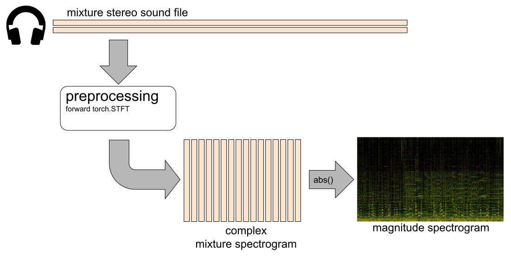
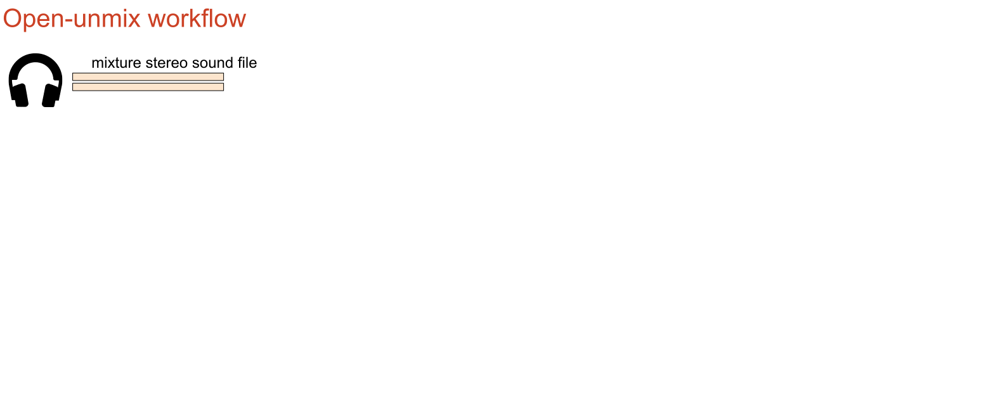
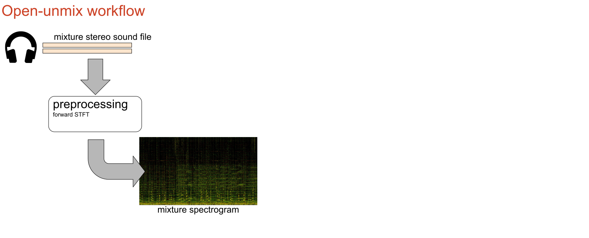
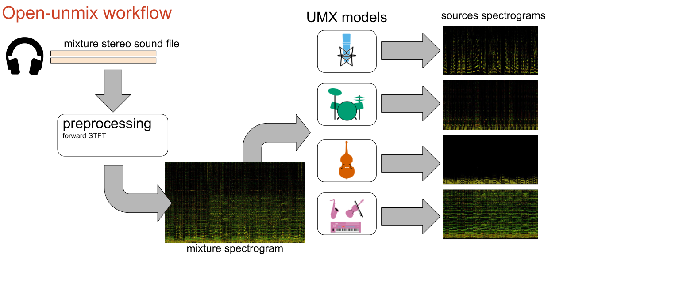
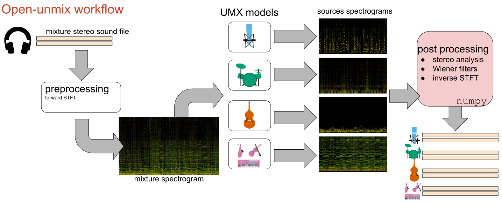
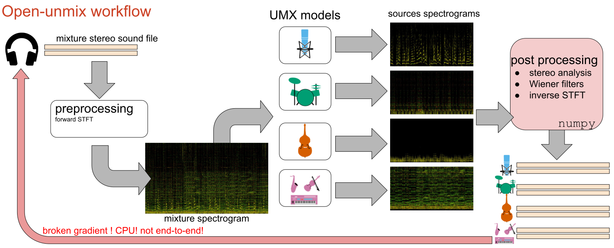
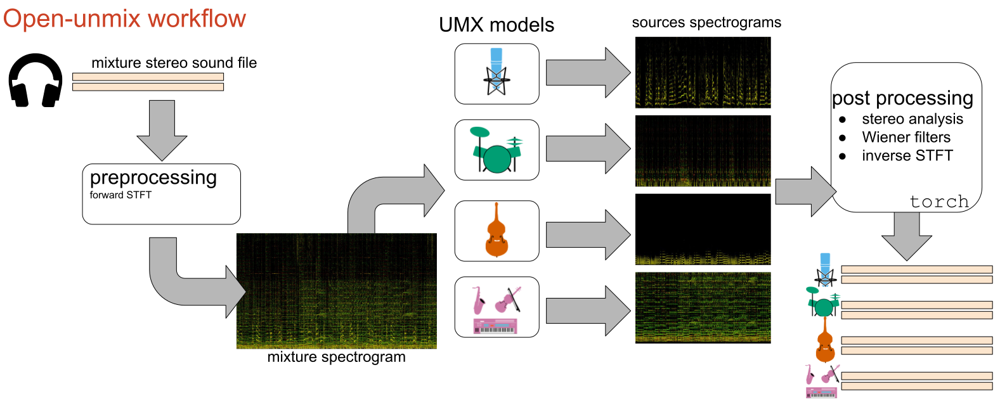
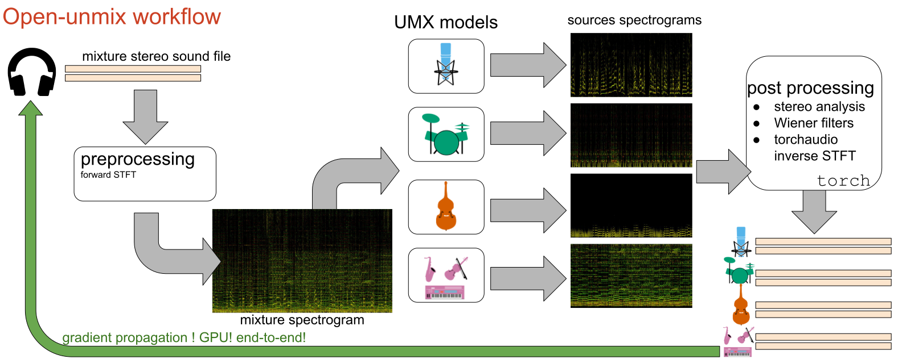
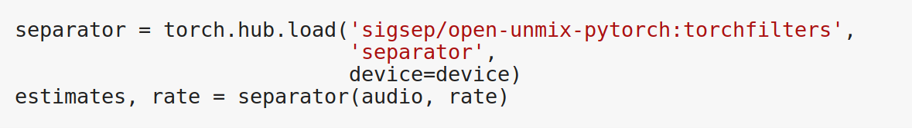

End-to-end music demixing with pytorch
antoine.liutkus@inria.fr
fabian-robert.stoter@inria.fr
faroit
September 16th, 2019

Music Unmixing/Separation


Applications

- Automatic Karaoke
- Creative Music Production
- Active listening
- Upmixing (stereo $\Rightarrow$ 5.1)
- Music Education
- Pre-processing for MIR
Time frequency representations
Mixture spectrogram
Vocals spectrogram
Drums spectrogram
Bass spectrogram
The pytorch Open-unmix (UMX) model

The pytorch Open-unmix (UMX) model

The pytorch Open-unmix (UMX) model

The pytorch Open-unmix (UMX) model
A state of the art system
- MIT-licensed Pytorch implementation
- /sigsep/open-unmix-pytorch 6.3 dB vocals SDR!
F. Stöter et al, "Open-Unmix - A reference implementation for audio source separation", JOSS 2019.
What open-unmix can achieve
Open-unmix: master branch

Open-unmix: master branch

Open-unmix: master branch

Open-unmix: master branch

Open-unmix: master branch

Our submission to the hackaton!
Open-unmix: torchfilters
Open-unmix: master branch
Open-unmix: torchfilters branch

Open-unmix: torchfilters branch

Our submission to the hackaton!
Open-unmix: torchfilters
- Stereo Wiener filtering in
torch - inverse ISTFT with
torchaudio - End-to-end
Separatortorch.Module  - Computing time for 1mn audio
- Before:
- cpu: 31.3s
- cuda: 22.5s
- After
- cpu: 23.4s (25% speedup)
- cuda: 6.8s (70% speedup)

End-to-end music demixing with pytorch